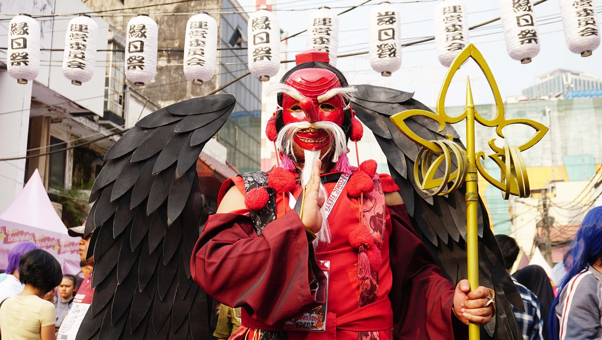
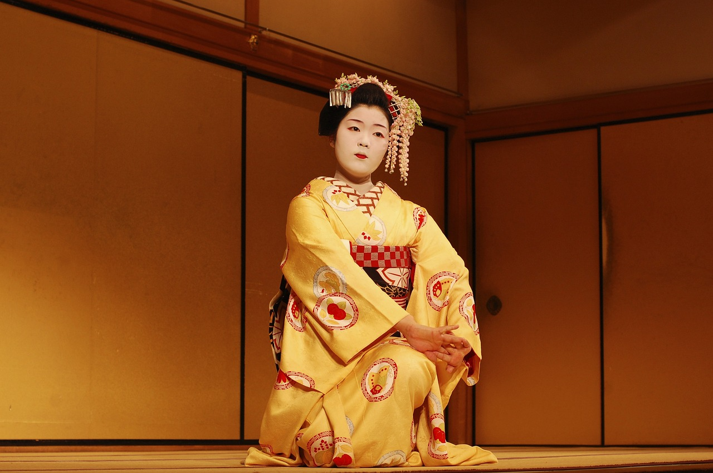
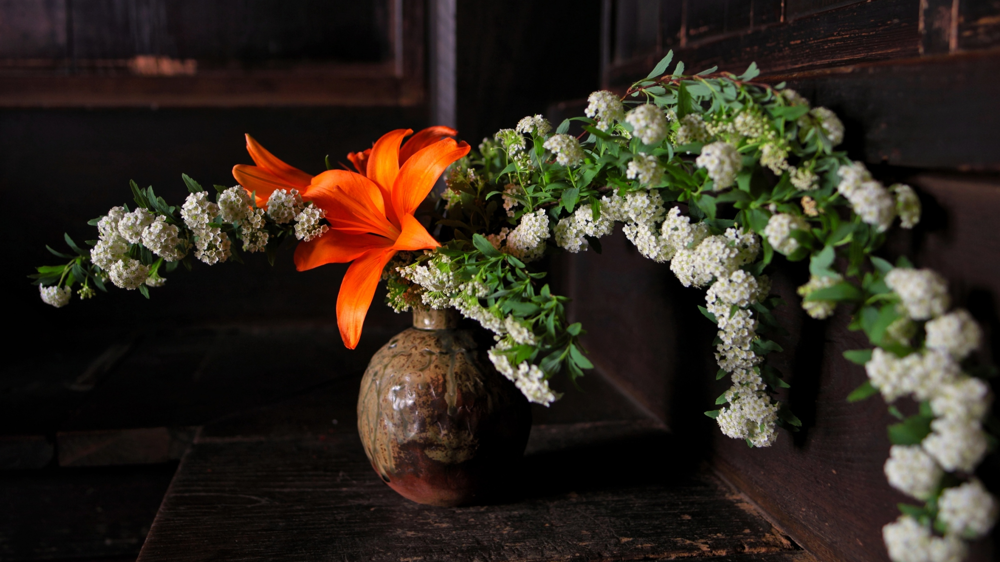
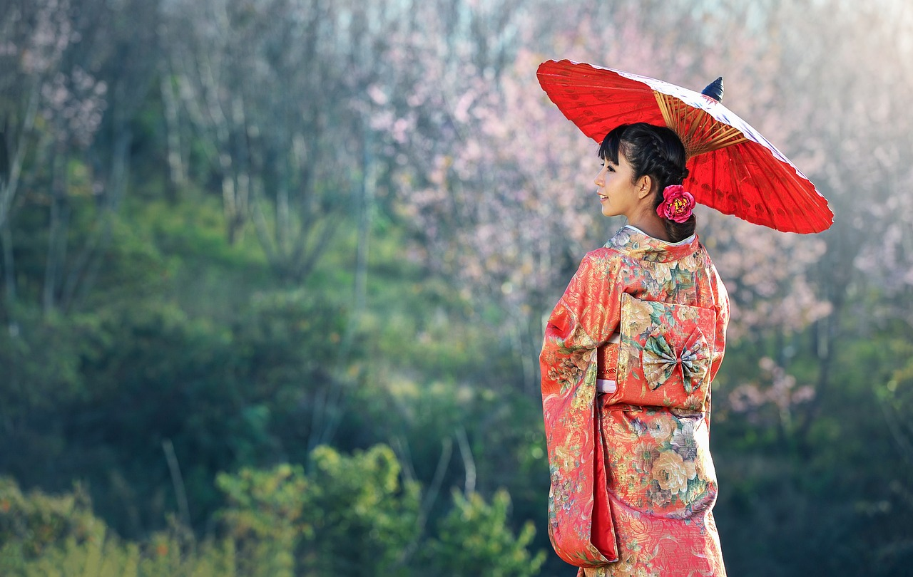
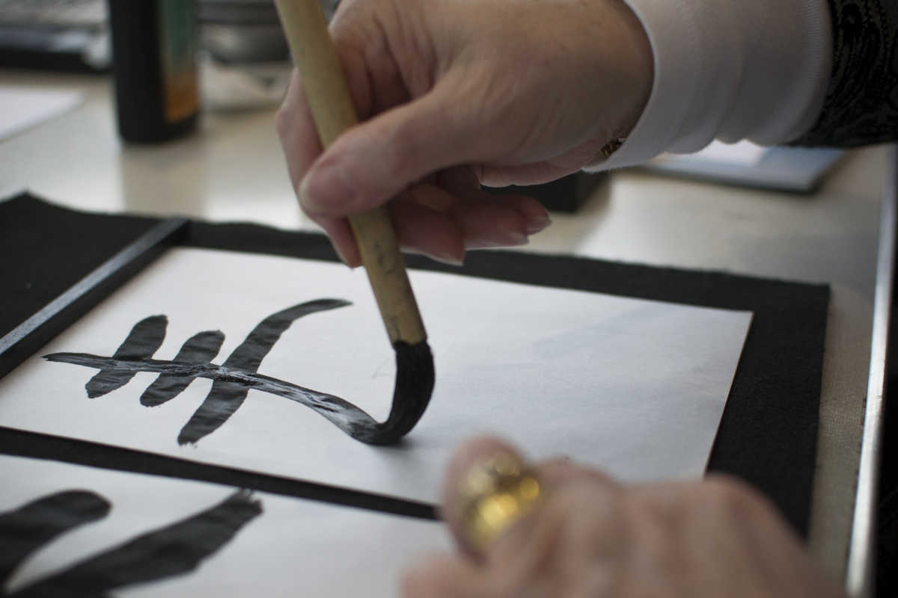

La Culture Japonaise : Un Mélange d'Ancien et de Moderne
1 - La Cérémonie du Thé (茶道 - Sadō)
La cérémonie du thé, ou sadō, est l'un des symboles de la culture japonaise. Plus qu'une simple
préparation de thé, c'est un rituel raffiné qui met en avant le respect, l'harmonie et la tranquillité.
L'art de la cérémonie est basé sur des mouvements précis et codifiés, avec une attention portée aux
détails, de la préparation du thé matcha à la disposition des ustensiles.
En
savoir
plus

2 - Les Matsuri : Festivals Japonais
Les matsuri sont des festivals traditionnels qui rythment la vie au Japon, souvent liés à des rites
religieux. Ils varient selon les régions et les saisons. Le Gion Matsuri à Kyoto ou le Nebuta Matsuri à
Aomori sont parmi les plus célèbres. Ces événements sont l’occasion de parades, de danses, de musique et
de feu d’artifice, offrant une ambiance festive et colorée.
En savoir plus

3 - Le Théâtre Kabuki (歌舞伎)
Le kabuki est un théâtre traditionnel japonais connu pour ses costumes flamboyants et le maquillage
distinctif des acteurs. Chaque geste, chaque expression est surjouée pour exprimer des émotions
intenses. Le kabuki raconte souvent des histoires dramatiques, de samouraïs, de dieux ou de personnages
légendaires, mêlant danse, musique et performance théâtrale.
En savoir plus

4 - L'Ikebana (生け花) : L'Art Floral
L'ikebana est l'art japonais de l'arrangement floral. Contrairement aux bouquets occidentaux, l'ikebana
valorise l'esthétique minimaliste et la beauté naturelle des fleurs et des plantes. Chaque élément est
soigneusement disposé pour créer un équilibre parfait entre simplicité et harmonie avec la nature.
En
savoir plus

5 - Les Geishas : Les Gardiennes de la Tradition
Les geishas sont des artistes traditionnelles japonaises, formées dès leur jeune âge aux arts du
spectacle, comme la danse, la musique et la conversation. Elles incarnent l'élégance et la culture
japonaise, et bien qu'elles soient souvent mal comprises, leur rôle est de divertir avec grâce lors
d'événements sociaux et culturels.
En savoir
plus

6 - Le Zen et les Temples Bouddhistes
Le zen, une forme de bouddhisme, joue un rôle central dans la culture japonaise, influençant des aspects
de la vie quotidienne, comme la méditation et l'architecture des temples. Des lieux comme le temple de
Kinkaku-ji à Kyoto ou celui de Senso-ji à Tokyo attirent des millions de visiteurs chaque année,
fascinés par leur beauté et leur sérénité.
En
savoir
plus
7 - Le Manga et l'Animé
Le manga et l'animé sont des phénomènes culturels modernes qui ont conquis le monde. Inspirés des
traditions artistiques japonaises, ils couvrent une variété de genres et de thèmes, allant de l'action à
la romance, en passant par le fantastique. Ils sont devenus un pilier de la culture pop mondiale, tout
en restant profondément enracinés dans l'identité japonaise.
En savoir
plus

8 - La Calligraphie Japonaise (書道 - Shodō)
Le shodō, ou l'art de la calligraphie japonaise, est une discipline artistique ancestrale. Les artistes
utilisent des pinceaux et de l'encre pour créer des caractères kanji avec une grande élégance et
précision. La calligraphie est perçue comme une voie vers la sérénité et la discipline
spirituelle.
En
savoir plus